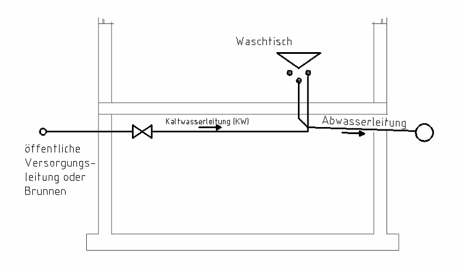
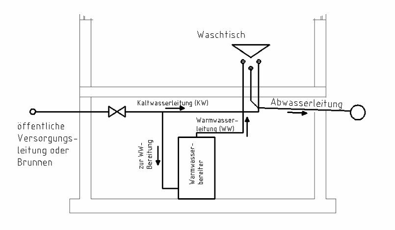

1 Warmwasserbereitung
Öffnet YouTube. Braucht Internet.
Zum Zeichnen und Rechnen am Papier. Braucht Internet.
Woher kommt das Wasser?
Das Kaltwasser (KW) kommt über die öffentliche Wasserversorgung oder eine Brunnenanlage ins Gebäude.
Dort werden die einzelnen Verbraucher versorgt, z. B. der Waschtisch.

So entsteht Warmwasser
Für die Warmwasserbereitung wird ein Teil vom Kaltwasser abgezweigt (in eine eigene Leitung geführt). Es fließt zu einem Warmwasserbereiter.
Der Warmwasserbereiter erwärmt das Wasser. Dann fließt es als Warmwasser (WW) zum Waschtisch.

Wohin fließt das Wasser?
Das verbrauchte Wasser fließt durch die Abwasserleitung aus dem Gebäude.
Die Abwasserleitung liegt im Gefälle. Das heißt: Sie geht leicht nach unten. So fließt das Abwasser von selbst ab.
Offener Kreislauf: Das Wasser wird verbraucht und fließt weg. Es kommt nicht zurück.
Trinkwasser ist Wasser aus der Leitung, das man trinken kann. Kaltwasser und Warmwasser im Haus sind Trinkwasser.
Leitungskennfarben
| Leitung | Kennfarbe |
|---|---|
| Kaltwasser (KW) | grün |
| Warmwasser (WW) | orange |
| Abwasser | braun oder schwarz |
Tippe die richtige Antwort an. Dann tippe auf „Prüfen“.
Grün = richtig, Rot = schau noch einmal.
Aufgabe 1
Lückentext: Tippe in jedem Satz das richtige Wort an.
Das Kaltwasser kommt über die öffentliche Wasserversorgung oder eine in das Gebäude.
Zur wird ein Teil des abgezweigt und in einem Warmwasserbereiter aufgewärmt.
Die Leitungen für Kaltwasser und führen beim Waschtisch bis zum Eckventil.
Durch die wird das verbrauchte Wasser abgeführt.
Diese Leitung muss man im verlegen.
Aufgabe 2
Welche Kennfarbe hat die Leitung?
| Kaltwasser | |
| Warmwasser | |
| Abwasser |
Aufgabe 3
Warum spricht man beim Trinkwasser von einem offenen Kreislauf?
Aufgabe 4
Warum liegt die Abwasserleitung im Gefälle?